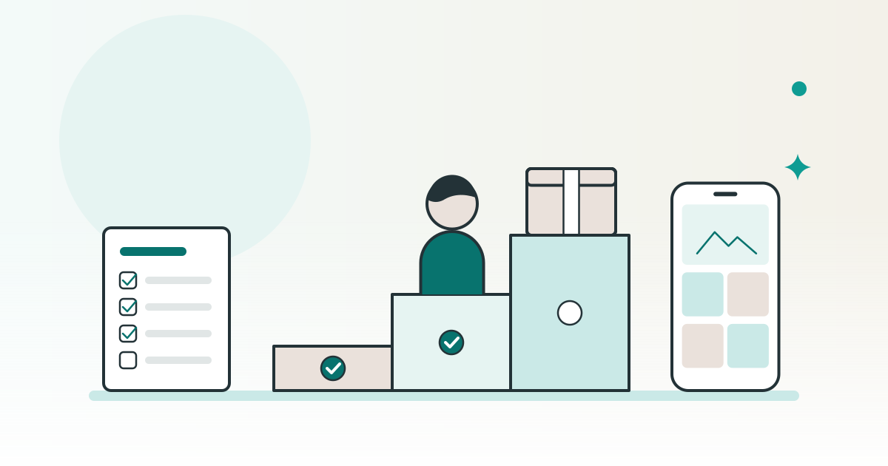

SHOPKIT コラム
BASEでネットショップを始める手順開くまでと最初の設定

BASEでネットショップを始めたいときは、登録の操作に入る前に、商品と販売条件のメモを作っておきましょう。この記事では、開店に向けて用意する情報と、公式の案内で確かめる順番を整理します。ここでいう最初の設定は、送料や支払いなど、お店で使う条件を決めることです。個別の画面やボタンの操作は、公式ヘルプで確認してください。
この記事は、完成品のネットショップを販売している SHOPKIT が書いています。
BASEでネットショップを始める前に、商品と販売条件を紙にそろえる
最初に、売る予定の商品を手元の写真や資料と照らします。商品名だけでなく、何が届くか、どの大きさか、何を選んで注文する品物かを書き出しましょう。このメモを商品ページと発送の準備の両方で使うと、説明を別々に作って食い違うことを防ぐ助けになります。
たとえば色違いの服を扱うなら、色名・サイズ・実寸・素材・販売する枚数を区別します。雑貨なら、本体と付属品を分けて書く案が考えられます。写真に写っていても販売に含めない小物がある場合は、購入前に分かる説明を用意しておきます。
- 販売する物：商品名、色やサイズの区別、販売する単位、同梱する物。
- 伝える素材：自分で使える写真、確かめた寸法や素材、取り扱い上の注意。
- 届ける条件：手元にある商品か、仕入れを待つ商品か、梱包と配送をどうするか。
- 店の案内：販売する人の情報、連絡先、返品を受け付ける条件。
扱う物によって許可や表示の確認が必要かどうかは、販売前に担当窓口へ確かめておきましょう。開店準備に要る物の全体は、関連の記事でも整理しています。
関連：ネットショップ開業に必要なもの・手続きは？始める前に用意する物の一覧
ネットショップへの登録とは別に、税務の手続も確認します。国税庁の「個人事業の開業届出・廃業届出等手続」は、新たに事業を始めた場合などの届出を案内し、対象となる人、提出時期、作成と提出の方法を載せています。自分の場合の必要な届出や期限は、同ページと税務署の相談窓口で確かめてください。
公式の案内では、登録条件と販売開始までの確認事項を調べる
準備したメモを持って、BASEの公式ヘルプで自分に当てはまる案内を確認します。登録に求められる情報、利用できる条件、販売を始めるまでに必要な確認を調べましょう。入力を始める前に、費用が発生する条件や、利用する支払い・配送の扱いも確かめておきます。
分からない所を調べる際は、「何を売る予定か」「どの条件を決めたいか」「どこまで確認できたか」をメモします。見つけた案内の題とURL、確認した日も残し、自分の予定する使い方に当てはまるかを読み直しましょう。見当たらない項目は、不要だと決めずに公式の窓口へ質問します。
- 商品と販売条件のメモを用意する
- 公式の利用条件と必要情報を確認する
- 送料・支払い・店の表示内容を決める
- 商品ページと発送の準備を照合する
- 公式の案内に沿って販売開始を確認する
これは、用意する情報をつなげるための準備順です。登録や審査に関する具体的な操作、必要書類、利用開始の時期については、公式の案内で自分の条件を確かめてから進めてください。
送料・支払い・返品を、ページへ載せる文章にする
最初に決めた販売条件は、入力する値と、お客様に読んでもらう説明を一緒に作ります。送料なら、梱包後の大きさや届け先を踏まえて調べ、自分の店でどう案内するかを書きます。金額だけを先に決めて、梱包や配送の条件を後回しにしないようにしましょう。
| 決める項目 | 手元で確かめる物 | 文章にする内容 |
|---|---|---|
| 送料 | 梱包後の寸法・重さと、利用する配送の条件 | 商品代金と別に払う送料、届け先による違い |
| 支払い | 公式の案内と、自分が利用する契約内容 | 選べる支払い方法、いつ支払うか、別途の負担 |
| 商品を届ける時期 | 在庫の状態、仕入れと発送の準備 | 商品ごとに確かめた引き渡しの時期 |
| 返品 | 自分の販売条件と、公的資料の説明 | 受け付けるか、期間や条件、返す際の費用負担 |
消費者庁の特定商取引法ガイド「通信販売」では、広告で知らせる事項として、販売する価格と送料、支払いの時期や方法、商品を渡す時期などを挙げています。販売事業者の名前、所在地、電話番号も、その項目に含まれます。
返品について特約を設ける場合は、その内容を示す説明も同じガイドにあります。返品を受け付けるか、受け付ける期間や条件、返送時の費用負担を確認します。表示の省略には別に条件があるため、自分だけの判断で項目を削らず、公式資料と相談窓口で確かめてください。
お店全体の案内と商品ごとの説明を見比べ、送料や届ける時期が食い違っていないかを点検しましょう。初めて見る人が商品ページから販売条件と連絡先へたどれるかも、自分のスマートフォンで確かめます。
代表の商品で、注文内容から梱包までを机の上でたどる
商品ページを用意するときは、まず代表の商品を選び、写真・説明・販売条件を一緒に読みます。色やサイズを選ぶ商品なら、選んだ内容だけで、手元でどの品物を用意するか区別できるかを確かめましょう。品物と写真、メモで使う呼び名もそろえます。
次に、購入されたと想定した内容を紙へ書き出し、その品物と梱包資材を机に並べてみます。販売する単位と包む数量が一致するか、説明した付属品を入れられるか、予定する配送に合う荷物になるかを点検します。実際の注文や支払いを伴う試験をする方法は、公式の案内を確認してから決めてください。
点検では、事実として確かめた結果と、まだ確認できない箇所を分けます。「写真の色名とメモの色名が違った」「梱包後の寸法を測っていない」など、直す対象が分かる形で残しましょう。試していない所を、準備が済んだ項目に含めないようにします。
注文後の連絡や対応の詳しい手順は別に整え、ここでは商品と販売条件がつながるかの確認までにとどめます。
関連：ネットで起業するには｜ネットショップで始める流れと準備
開店後の記録を、準備した内容の見直しへ戻す
販売を始めた後は、どの商品をどこで案内したか、注文があったか、説明が足りなかった所はどこかを残します。見られる記録の項目や数え方は、公式の案内で意味を確かめましょう。分からない欄を埋めて、来店や注文がなかったと決めることは避けます。
修正する場合は、対象の商品、直した箇所、日付、理由を一緒に残します。たとえば寸法の質問が来たなら、商品ページに選ぶための情報があるかを見直す材料になります。開店前のメモへ戻して直すと、次の商品を載せる際にも同じ不足を確かめやすくなります。
開店したことと、買ってもらえる理由が分かることは分けて考えましょう。準備したページが実際にどう読まれるかを確かめ、必要な説明や案内先を見直していきます。
完成品を選ぶ場合は、受け取る準備と自分で決める条件を分ける
一からお店を作るか、完成品を選ぶかを考えるときは、商品や写真を用意する作業と、販売条件を理解して自分の店で使う準備を分けておきます。何を受け取り、その後に何を確かめるかを書き出してから、始め方を比べましょう。
SHOPKITのサービスページでは、デザイン済みのお店一式と仕入れの情報に、運営・集客のマニュアルを添えてお渡しすると案内しています。販売商品と店舗の準備を整え、お引き渡し後に販売を始められる状態でお渡しするという説明です（2026年10月15日時点）。中身はお届けするもので確認できます。
完成品を選ぶ場合も、受け取った資料を読み、商品の説明と届ける条件を自分で確かめる準備をしておきましょう。販売を始めた後に、どの商品を誰に案内するかも考えておきます。
関連：ネットショップは作る？買う？始め方の手間と費用を比べる
よくある質問
BASEでネットショップを始める前に、何を準備しておけばよいですか？
商品の写真や説明、販売する単位、送料・支払い・返品などの条件をメモにします。登録に必要な情報や利用条件は、公式の案内で自分の場合を確認してください。
ネットショップの送料は、開店した後に決めてもよいですか？
販売前に、梱包後の寸法や重さ、利用する配送の条件を確認し、お店で案内する送料を決めておく案を紹介しています。商品ごとの説明とお店全体の案内も照らしましょう。
ネットショップに登録すれば、開業届も出したことになりますか？
ネットショップへの登録とは別に、税務の手続を確認します。国税庁の案内と税務署の相談窓口で、自分に必要な届出や期限を確かめてください。
※ SHOPKITのお届けするものに関する記載は、2026年10月15日時点のサービスページに基づきます。公的資料は2026年10月28日に確認しました。BASEの登録条件・機能・操作・利用条件は、公式ヘルプと窓口でご確認ください。